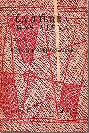
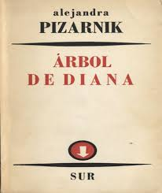
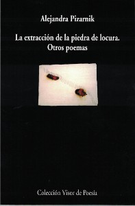
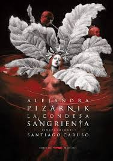
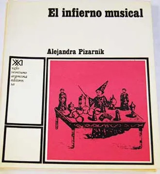
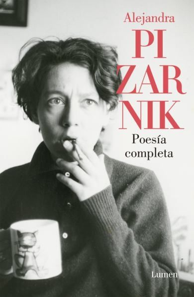
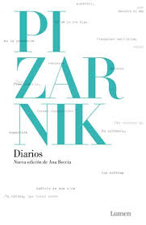
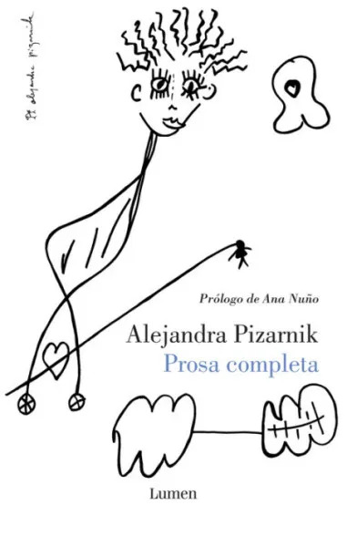
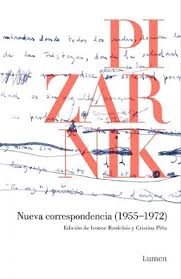

Alejandra Pizarnik
Alejandra Pizarnik (1936-1972) fue una poeta y ensayista argentina, nacida en Buenos Aires. Famosa por Los trabajos y las noches y su exploración de la angustia existencial, empleó un lenguaje preciso y profundamente introspectivo. Su obra, que aborda temas oscuros y complejos, ha dejado una influencia duradera en la poesía contemporánea.
Galería de Obras

La tierra más ajena

Árbol de Diana

Extracción de la piedra de la locura

La condesa sangrienta

El infierno musical

Poesía completa

Diarios

Prosa completa

Nueva correspondencia